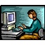

BINARY
nThe language of
computers is based on 0s and 1s
nFor instance, a
computer would completely understand the following: 01001010111101001001010000010100101011110100
nThis is called a
binary number
nComputers communicate
using these binary numbers
